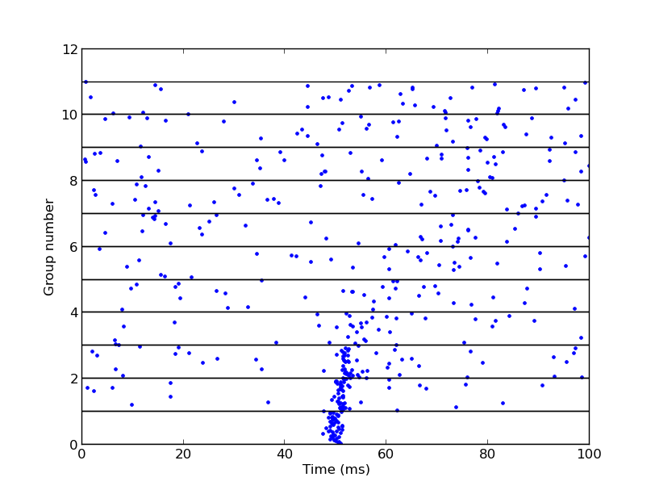

For the paper: Diesmann M, Gewaltig MO, Aertsen A (1999) Conditions for stable propagation of synchronous spiking in cortical neural networks. Nature 402:529-533 Abstract: The classical view of neural coding has emphasized the importance of information carried by the rate at which neurons discharge action potentials. More recent proposals that information may be carried by precise spike timing have been challenged by the assumption that these neurons operate in a noisy fashion--presumably reflecting fluctuations in synaptic input and, thus, incapable of transmitting signals with millisecond fidelity. Here we show that precisely synchronized action potentials can propagate within a model of cortical network activity that recapitulates many of the features of biological systems. An attractor, yielding a stable spiking precision in the (sub)millisecond range, governs the dynamics of synchronization. Our results indicate that a combinatorial neural code, based on rapid associations of groups of neurons co-ordinating their activity at the single spike level, is possible within a cortical-like network. Brian simulator models are available at this web page: http://briansimulator.org/docs/examples-frompapers_Diesmann_et_al_1999.html and here is a similar but longer one with functions and a class definition: http://briansimulator.org/docs/examples-frompapers_Diesmann_et_al_1999_longer.html The simulation generates an image similar to Fig. 1d in the paper, albeit at a faster synaptic delay than the papers 5ms one: If n is reduced to 48 on line 18 (the PulsePacket line) a figure similar to 1e is produced:  This simulation requires Brian which can be downloaded and installed from the instructions available at http://www.briansimulator.org/ For support on installing and using Brian simulations there is a support group at https://groups.google.com/group/briansupport.